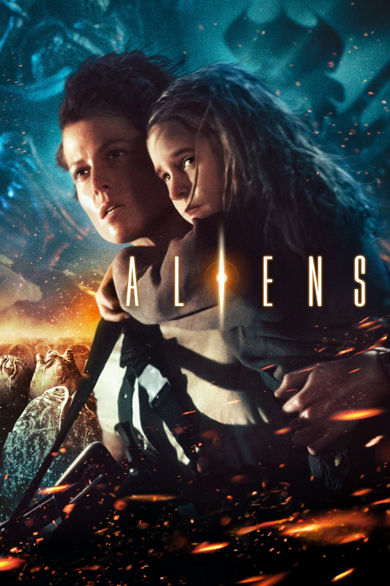

Мировая премьера: 18 июля 1986
Слоган: В этот раз это война...
Сюжет: Рипли – единственная выжившая после схватки с Чужим на корабле "Ностромо" – провела 57 лет в анабиозе, блуждая в космосе, пока её капсулу не обнаружили спасатели. Её рассказ о злобном монстре, который уничтожил весь экипаж, встречают скептически, тем более, что за это время планета LV-426, откуда появился Чужой, была колонизирована людьми. Но когда связь с колонистами прерывается, Рипли соглашается присоединиться к команде космического десанта, чтобы вернуться на планету, где начался её кошмар.
Режиссёр: Джеймс Кэмерон
Серия: Чужой
В ролях: Сигурни Уивер, Майкл Бин, Билл Пэкстон
| Сигурни Уивер | Эллен Рипли |
| Майкл Бин | Капрал Дуэйн Хикс |
| Билл Пэкстон | Рядовой Уильям Хадсон |
| Пол Райзер | Картер Бёрк |
| Кэрри Хенн | Ребекка "Ньют" Джорден |
| Уильям Хоуп | Лейтенант Скотт Горман |
| Лэнс Хенриксен | Бишоп |
| Эл Мэттьюс | Сержант Эл Эйпон |
| Дженетт Голдстин | Рядовая Дженетт Васкес |
| Рикко Росс | Рядовой Рикко Фрост |
| Марк Ролстон | Рядовой Марк Дрейк |
Бюджет: $ 19 млн.
Кассовые сборы в США: $ 85 млн.
Кассовые сборы в мире: $ 131 млн.
Продолжительность: 2 ч. 32 мин.
Рейтинг: 8.4